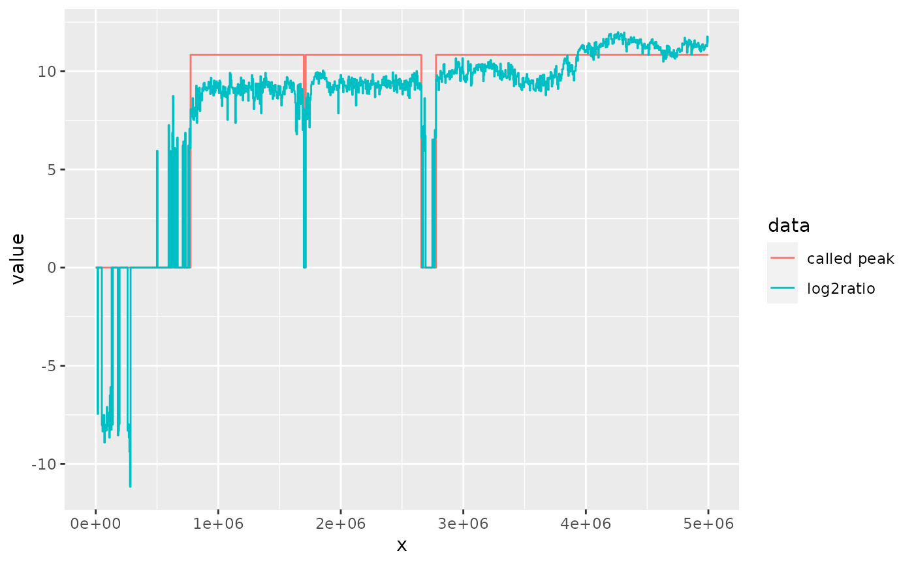

Call very broad peaks for data such as LAD domains, NAD domains. Reads will be count by each bins. Only bins with at least given reads (defined by background parameter) for all samples (pool all reads for each bin) will be subsequently normalized. These bins will be first normalized to CPM (count per million) reads and then do log2 transform for the ratio over control with a pseudocount. The peaks were defined by running a hidden markov model over the normalized values (using the R-package HMMt).
HMMtBroadPeak( treatment, control, binSize = 5000, background = 10, pseudocount = 1, gapwidth = binSize, ... )
| treatment, control | Bam file of treatments and controls. Make sure the index file keep same prefix name with bam file. |
|---|---|
| binSize | The size of bins for count |
| background | Only bins with at least background reads (pool all reads) will be subsequently normalized. |
| pseudocount | default 1. |
| gapwidth | The Ranges of peaks separated by a gap less than gapwith positions will be merged. |
| ... | parameters passed to BaumWelchT except m (fixed to 2). |
a list with elements counts and peaks. Bothe counts and peaks are GRanges objects.
treatment <- system.file("extdata", "LB1.KD.chr1_1_5000000.bam", package = "HMMtBroadPeak", mustWork = TRUE) control <- system.file("extdata", "LB1.WT.chr1_1_5000000.bam", package = "HMMtBroadPeak", mustWork = TRUE) called <- HMMtBroadPeak(treatment, control)#> iteration: 1 iteration: 2 iteration: 3 iteration: 4 iteration: 5 iteration: 6 iteration: 7 iteration: 8 iteration: 9 iteration: 10 iteration: 11 iteration: 12 iteration: 13 iteration: 14 iteration: 15 iteration: 16 iteration: 17 iteration: 18 iteration: 19 iteration: 20 iteration: 21 iteration: 22 iteration: 23 iteration: 24 iteration: 25 iteration: 26 iteration: 27 iteration: 28 iteration: 29 iteration: 30 iteration: 31 iteration: 32 iteration: 33 iteration: 34 iteration: 35 iteration: 36 iteration: 37 iteration: 38 iteration: 39 iteration: 40 iteration: 41 iteration: 42 iteration: 43 iteration: 44 iteration: 45 iteration: 46 iteration: 47 iteration: 48 iteration: 49 iteration: 50 iteration: 51 iteration: 52 iteration: 53called$peaks#> GRanges object with 3 ranges and 0 metadata columns: #> seqnames ranges strand #> <Rle> <IRanges> <Rle> #> [1] chr1 774227-1698303 * #> [2] chr1 1713289-2657344 * #> [3] chr1 2777225-5000001 * #> ------- #> seqinfo: 1 sequence from an unspecified genome